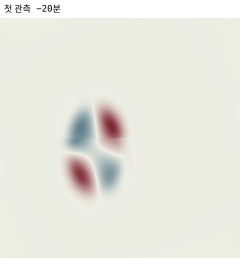
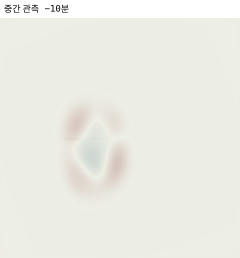
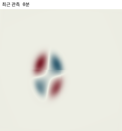

ADVAR 교육용 레이더 데모 · Phase 1
이동을
검증하다
관측한 반사도가 움직일 때, 예측은 얼마나 남는가?
기존 P0 교육 사례와 같은 입력의 P0·FV 자료동화 비교를 선택합니다. 각 결과의 방정식·평가 영역·종료 상태를 함께 확인하세요.
자료 확인 중이 사례로 무엇을 검증하나요?
- 실행한 모형
- 비교 기준
- 선택한 선행시간에서 같은 유효 화소의 예측 MAE가 persistence MAE보다 작은가? 이는 수치 비교이며 통계적 유의성이나 전체 모델 성공 판정은 아닙니다.
- 현재 결과
- 평가 범위
- 해석·한계
- 같은 입력 비교
- —
- 경계 입력
- —
- 추정된 운동
- —
- 실제 장의 운동 검증
- —
- 운동 검증의 범위
- —
- 분석 종료
- —
- 아직 검증 안 됨
- —
사례·방법별 저장 결과를 한눈에 보기
행을 선택하면 아래 지도도 해당 사례로 바뀝니다. 개선 시각 수는 각 선행시간의 공통 유효영역 비교이며, 시각·사례 사이에 고정된 영역의 성능을 뜻하지 않습니다.| 사례 | 예측 MAE가 작은 시각 | 같거나 구분 불가 | 큰 시각 | 미평가 |
|---|
공간 비교리드 10분
정답 truth
정답 자료 없음
예측 forecast
예측 자료 없음
오차 truth − forecast · 양수: 과소예측
오차를 계산할 자료 없음
관측 latest
관측 자료 없음
실험 조작키보드: Space · ← → · Home
시나리오 설명이 여기에 표시됩니다.
판독자료 없음
- 예측 MAE
- N/A
- Persistence MAE
- N/A
- Persistence 대비 개선
- N/A
- 채점 픽셀 / 전체
- N/A
- 평가 비율
- N/A
- 예측 유효영역
- N/A
- confidence · 확률 아님
- N/A
N/A는 결측이거나 해당 리드의 조건부 점수가 없다는 뜻입니다.
리드타임 곡선MAE vs persistence
자료를 선택하면 곡선을 그립니다.
예측이 놓친 에코 · 합성 진단
탐지율·CSI는 평가영역 안의 값입니다. 평가 밖 정답 에코도 함께 확인하세요. 미제공은 무에코 예측과 다릅니다.
한 장으로 읽는 모형
가정 · 무엇을 고정했나
관측 시각의 반사도장과 이동 벡터, 로그 성장률을 상태로 둡니다. 각 선행시간은 초기장에서 직접 이동해 계산하며, 앞 리드의 결과를 다시 보간해 이어 붙이지 않습니다. 이 교육용 화면은 회전·변형·새로운 대류 생성까지 계산한다고 말하지 않습니다.
qh = exp(g Σj=0..h−1 ρj) R(h·d) q0 ρ = e−Δt/τ
시나리오의 기대 현상을 선택한 뒤 정답 격자와 비교해 보세요.
에코 보존 · 무엇이 보존되나
성장·감쇠가 없고 경계 유출이 없는 순수 수송에서 경계 안의 선형 에코량 합을 셉니다. 격자 밖으로 나간 양은 경계 유출로 기록되며, dBZ 값의 평균을 보존한다는 뜻이 아닙니다. 물이나 강수량 보존으로 확대 해석하지 마세요.
결측 · 빈 칸을 점수에 넣지 않는 이유
현재 선행시간에서 예측·persistence·정답이 함께 유효한 화소로 비교합니다. 선행시간별 평가영역은 달라질 수 있습니다. 결측을 0으로 채우면 비가 오지 않은 것으로 바뀌어 MAE가 왜곡됩니다. 현재 리드의 채점 픽셀 수와 평가 비율, 예측 유효영역을 함께 확인하세요.
정답확률 아님 · confidence를 어떻게 읽나
confidence는 보정된 정답 확률이 아닙니다. 국소 경향 근거와 위치·성장 불확실성을 반영한 모형 신뢰 지표이며, 실제 확률 보장을 뜻하지 않습니다. 숫자가 높다고 미래 강수의 발생 확률로 읽지 마세요.
한계 · 이 실험이 말하지 않는 것
실자료의 운영 성능과 전역 최적성은 이 화면의 범위가 아닙니다.
작은 합성 격자에서 방정식과 구현의 정합성을 살피는 1차 이론 실증입니다. 시나리오마다 표시되는 한계 문장을 먼저 읽고, 점수의 적용 범위를 정하세요.
실제 신경망 학습·FSOI 수치 검증 — 별도 4×5 합성 실험
현재 240×240 회전 분석은 국소 1차 정상성 검사를 통과했습니다. 아래 학습은 별도의 작은 FV 실험이며, 240×240 학습이나 배경장 neural prior 검증 결과가 아닙니다.
3개 매개변수의 실제 신경망이 관측오차 표준편차를 출력합니다. 정확한 Hessian과 혼합 미분으로 한 번 갱신한 뒤, 다른 초기장·잡음의 자료를 다시 동화했습니다.
별도 자료의 dBZ MSE: 0.00019917512618196 → 0.00019917472238659. 감소 4.03795e-10 (0.000203%). 국소 오차 추정 척도 6.76332e-13 (엄밀한 상한 아님). 모델 저장·재적재 후 제어값·예측장·점수 차이 모두 0.
고정된 학습 모델에서 관측→특징 정규화→오차 가중치와 초기 배경장 B=y[0] 경로를 함께 미분했습니다. 전체 관측 민감도 방향값 -7.801787329e-04; 재동화 중앙차분 오차 7.101e-10 → 1.776e-10.
신경망 경로만의 추가 영향 4.162e-11는 가장 작은 차분 오차보다 작아 전체 관측 경로에서는 독립 판별되지 않았습니다. 분리된 특징→오차통계 경로는 별도 시험으로 확인했으며, 배경장 neural prior·실자료 성능·일반 FV 운영 적격성은 미검증입니다.
후속 분리 시험: 원관측·배경장·점수를 고정하고 특징→신경망 오차 경로만 변화시킨 재동화에서 민감도 -4.16155391e-11, 중앙차분 오차 1.937e-15로 이 국소 경로를 확인했습니다. 전체 관측을 변화시키는 실험과는 구분합니다. 분리 시험 원시 결과
정상점·민감도·학습 검증 — 별도 4×5 합성 실험
240×240 회전 사례의 인증 결과가 아닙니다. 같은 FV 방정식의 작은 CPU FP64 실험에서 정확한 Hessian으로 정상점을 보정하고 관측오차 크기를 학습했습니다. 일반 FV 배경장 prior·운영 학습은 미검증입니다.
기존 실패 사례의 기울기 노름: 1.371e-08 → 2.258e-11. Hessian 최소 고유값 15.5094, 조건수 1302.5.
학습 매개변수 θ = log(관측오차 배율). 정확한 매개변수 민감도 6.1843434e-05. 관측 민감도와 이 매개변수 미분을 구분합니다.
고정된 별도 검증 자료의 가중 dBZ MSE: 0.000199175126182 → 0.000199174605188. 개선율 0.000262%. 재적재 점수 차이 0.000e+00. 국소 수치 오차 추정치 8.161e-13 (엄밀한 오차 상한 아님). 판정: 통과.
작은 유한 섭동의 관측 영향은 재동화 Taylor 시험으로 검증했습니다. 현재 학습은 양의 오차 크기 한 개의 갱신이며, 전역 최적성이나 실자료 일반화를 증명하지 않습니다.
추가로 관측오차 표준편차를 출력하는 별도의 3개 매개변수 신경망에서, 고정된 두 학습 창을 번갈아 사용해 세 번 갱신했습니다. step 1에서 저장한 모델·SGD 상태를 새 객체로 재개한 최종 신경망 매개변수·옵티마이저 상태·검증 예측장은 모두 차이 0입니다. 홀드아웃은 갱신에 사용하지 않았고, 재동화 MSE는 0.000199175126182 → 0.000199174011886 (개선 1.11430e-09)였습니다. 이득이 FP64 점수 roundoff 척도보다 크다는 비교일 뿐 엄밀한 오차 상한이나 통계적 유의성은 아닙니다.
학습 원시 결과 · 지속 학습 원시 결과 · 정상점 원시 결과 · 검증 범위
240×240 FV 관측 민감도·유한 섭동 연구 검증
기존 화면의 원래 forecast·analysis 자료와 새 응답 계산을 구분합니다. 원래 demo-data 배열은 그대로 두고, 저장된 refined 분석 제어값에서 exact robust Hessian 응답을 계산한 별도 진단입니다. 전역 최적점, 운영 FSO/FSOI 적격성, 일반 FV를 주장하지 않습니다.
민감도 지도는 저장된 [3, 240, 240] 응답 텐서에서 만들었습니다. 값은 d(weighted mean dBZ²) / d(observation dBZ) 단위이며, 세 관측 시각에 하나의 최대 절대값 1.044280e-05을 적용해 대칭 정규화한 [-1, 1]입니다. 파랑은 음수, 종이색은 0, 빨강은 양수입니다.



측정 소스 커밋 ce6e36a의 저장 결과입니다. 작은 성장량을 보존하는 계산식에서 분석 상태를 보정하고 수반을 계산했습니다. 소스·응답 텐서·분석 체크포인트 해시를 확인해 재사용했으며, 현재 코드에서 다시 계산한 결과는 아닙니다.
응답 score 8.45622894e-04, sensitivity norm 4.36170133e-04, gradient max 5.730e-10, adjoint relative residual 4.284e-11, face margin 2.756e-01.
| h (dBZ) | 실제 Δscore | 1차 예측 h·s | 절대 잔차 | max |gradient| | 분기 여유 | 실제 변화 대비 오차 |
|---|---|---|---|---|---|---|
| 0.001 | 5.39303072e-06 | 2.26845231e-06 | 3.125e-06 | 9.467e-09 | 2.731e-01 | 57.94% |
| 0.0005 | 1.91541927e-06 | 1.13422615e-06 | 7.812e-07 | 1.429e-10 | 2.745e-01 | 40.78% |
| -0.0005 | -3.52933279e-07 | -1.13422615e-06 | 7.813e-07 | 2.931e-10 | 2.756e-01 | 221.37% |
상대오차 = |실제 변화 − 1차 예측| / |실제 변화|. 실제 변화가 작으면 상대오차가 커질 수 있으므로 절대 잔차와 함께 해석합니다. 허용 가능한 유한 섭동 범위는 아직 검증하지 않았습니다.
각 actual 값은 perturbed observations를 다시 자료동화해 얻은 값이고, h·s는 저장 응답의 signed linear prediction입니다. 두 양의 h에서 Taylor error 비는 3.999751567로 측정됐습니다. h를 절반으로 줄이자 오차가 약 4분의 1이 되어 2차 Taylor 잔차와 일치합니다. 다만 이 크기의 섭동에서는 1차 예측에 비해 잔차가 큽니다. 국소 미분 검증과 유한 변화량의 근사 정확도는 구분해야 합니다.
중앙 차분 slope 2.26835255e-03, 수반 slope 2.26845231e-03, 상대 오차 4.397e-05; 양의/음의 endpoint max |gradient| 1.429e-10 / 2.931e-10.
별도 3시간 처방 유동 정확도 검사
48km 영역·32/64/128 격자·알려진 영 경계의 donor-cell 시험입니다. 격자를 세분하면 오차가 감소하지만 아래 128격자 오차가 남습니다. 이산 수반의 일치가 연속 방정식에 대한 고정밀 민감도를 뜻하지 않습니다.
| 유동 | 에코 상대 L₂ 오차 | 독립 기준 대비 JVP 오차 |
|---|---|---|
| 병진 | 15.25% | 31.11% |
| 회전 | 9.61% | 20.05% |
| 면적보존 변형 | 3.37% | 13.45% |
처방 유동의 장시간 수치확산 검사이며, 240×240 역문제나 전체 D7 비용 검증이 아닙니다. 3시간 원시 결과·소스 해시
같은 3시간 조건의 저확산 후보 비교
48km·128격자·동일 초기장과 알려진 영 경계에서 계산했습니다. 원래 애니메이션을 교체한 결과가 아닌 별도 처방 유동 시험입니다. max 비율은 기준해 최대 에코에 대한 예측 최대 에코의 비율입니다.
| 유동 | 수송 | 에코 L₂ 오차 | 기준 대비 AD JVP 오차 | max 비율 |
|---|---|---|---|---|
| 병진 | donorcell | 15.25% | 31.11% | 83.76% |
| 회전 | donorcell | 9.61% | 20.05% | 89.29% |
| 변형 | donorcell | 3.37% | 13.45% | 96.79% |
| 병진 | minmod | 3.53% | 17.48% | 94.59% |
| 회전 | minmod | 1.51% | 8.26% | 96.25% |
| 변형 | minmod | 0.72% | 4.25% | 98.27% |
minmod의 형상 오차는 감소했지만 limiter 분기 안정성과 정확 FSO/FSOI 연결은 미검증입니다. 검열 raw 숫자의 민감도 0은 검열 관측을 제거해도 영향이 없다는 뜻이 아닙니다.
donor-cell 원시 결과 · minmod 원시 결과 · 검증 범위·폭·면적·비용
최종 응답 JSON · 응답 tensor · 중앙 차분 JSON · 민감도 −20분 · −10분 · 0분
{kind=link}
{kind=link}
{kind=link}
ADVAR Phase 1 · 간격 10분 · source